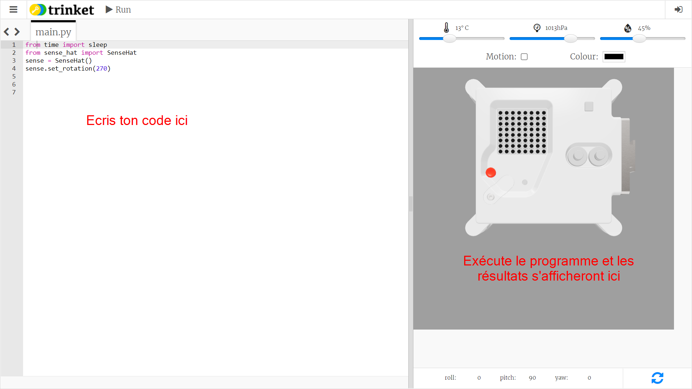
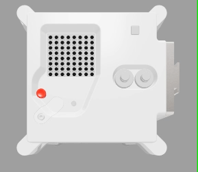

Envoyer un message
Ouvre l'émulateur Sense HAT pour le projet Mission Zero.
Tu vas constater que trois lignes de code ont été ajoutées automatiquement :
from time import sleep
from sense_hat import SenseHat
sense = SenseHat()
sense.set_rotation(270)

Ce code se connecte à l'Astro Pi et s'assure que l'écran LED de l'Astro Pi est affiché dans le bon sens. Laisse ce code ici car tu en auras besoin.
Peut-être pourrais-tu laisser un message de bienvenue aux astronautes de l'ISS qui travaillent près de l'Astro Pi ? Faisons défiler un message sur l'écran.
Ajoute cette ligne en-dessous de l'autre ligne de code :
sense.show_message("Astro Pi")
Appuie sur le bouton Run (Exécuter) et regarde le message Astro Pi défiler sur l'écran LED.

Pour afficher un message différent, tu peux écrire ce que tu veux entre les guillemets ("").
Quels caractères peuvent être utilisés ?
Le Sense HAT ne peut afficher que le jeu de caractères Latin 1, ce qui signifie que seuls les caractères suivants sont disponibles. Les autres caractères s'afficheront sous la forme d'un ? .
+-*/!"#$><0123456789.=)(
ABCDEFGHIJKLMNOPQRSTUVWXYZ
abcdefghijklmnopqrstuvwxyz
?,;:|@%[&_']\~
Tu peux aussi modifier la vitesse de défilement du message sur l'écran. Ajoute un scroll_speed (vitesse de défilement) à ta ligne de code, comme ceci :
sense.show_message("Astro Pi", scroll_speed=0.05)
La vitesse par défaut du message est 0.1. En réduisant le nombre, tu fais défiler le message plus rapidement et en augmentant le nombre tu fais défiler le message plus lentement.